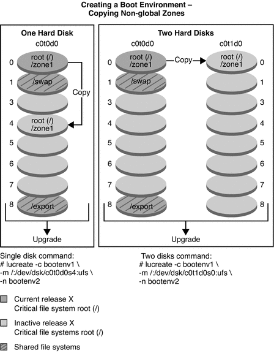
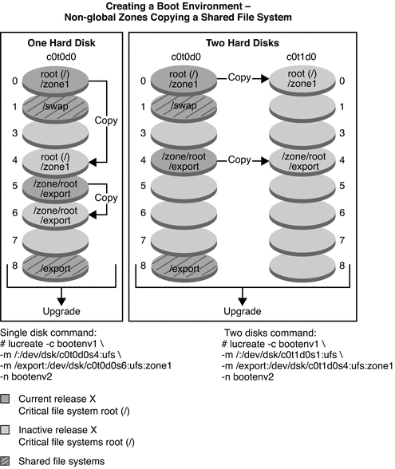

|
|||
|
Part I Upgrading With Solaris Live Upgrade 1. Where to Find Solaris Installation Planning Information 2. Solaris Live Upgrade (Overview) 3. Solaris Live Upgrade (Planning) 4. Using Solaris Live Upgrade to Create a Boot Environment (Tasks) 5. Upgrading With Solaris Live Upgrade (Tasks) 6. Failure Recovery: Falling Back to the Original Boot Environment (Tasks) 7. Maintaining Solaris Live Upgrade Boot Environments (Tasks) 8. x86: Locating the GRUB Menu's menu.lst File (Tasks) 9. Upgrading the Solaris OS on a System With Non-Global Zones Installed Creating and Upgrading a Boot Environment When Non-Global Zones Are Installed (Tasks) Upgrading With Solaris Live Upgrade When Non-Global Zones Are Installed on a System (Tasks) Upgrading a System With Non-Global Zones Installed (Example) Administering Boot Environments That Contain Non-Global Zones To View the Configuration of a Boot Environment's Non-Global Zone File Systems To Compare Boot Environments for a System With Non-Global Zones Installed 10. Solaris Live Upgrade (Examples) 11. Solaris Live Upgrade (Command Reference) |
Upgrading With Solaris Live Upgrade and Installed Non-Global Zones (Overview)Starting with the Solaris Express 2/07 release, you can upgrade or patch a system that contains non-global zones with Solaris Live Upgrade. If you have a system that contains non-global zones, Solaris Live Upgrade is the recommended program to upgrade and to add patches. Other upgrade programs might require extensive upgrade time, because the time required to complete the upgrade increases linearly with the number of installed non-global zones. If you are patching a system with Solaris Live Upgrade, you do not have to take the system to single-user mode and you can maximize your system's uptime. The following list summarizes changes to accommodate systems that have non-global zones installed.
Understanding Solaris Zones and Solaris Live UpgradeThe Solaris Zones partitioning technology is used to virtualize operating system services and provide an isolated and secure environment for running applications. A non-global zone is a virtualized operating system environment created within a single instance of the Solaris OS, the global zone. When you create a non-global zone, you produce an application execution environment in which processes are isolated from the rest of the system. Solaris Live Upgrade is a mechanism to copy the currently running system onto new slices. When non-global zones are installed, they can be copied to the inactive boot environment along with the global zone's file systems. Figure 9-1 shows a non-global zone that is copied to the inactive boot environment along with the global zone's file system. Figure 9-1 Creating a Boot Environment – Copying Non-Global Zones
Figure 9-2 shows that a non-global zone is copied to the inactive boot environment. Figure 9-2 Creating a Boot Environment – Copying a Shared File System From a Non-Global Zone
|
||
|